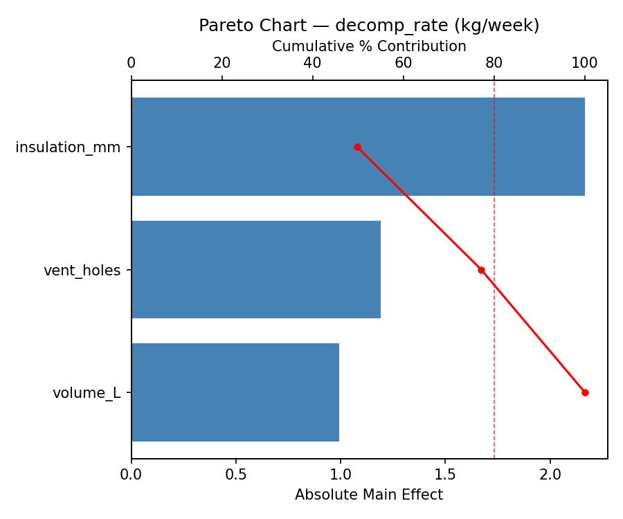
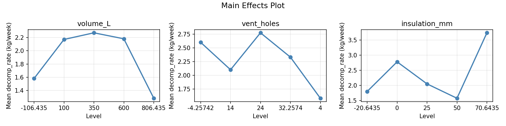
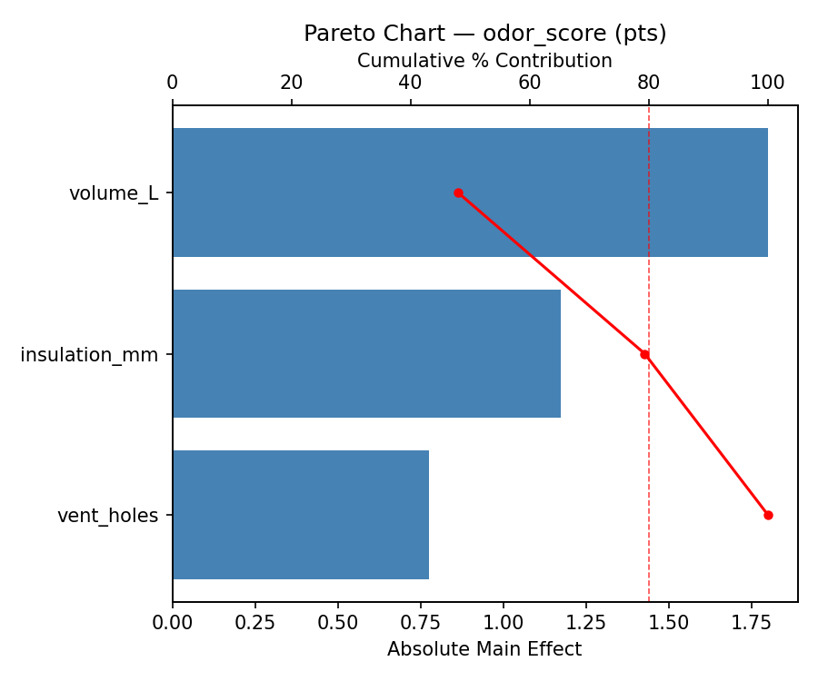
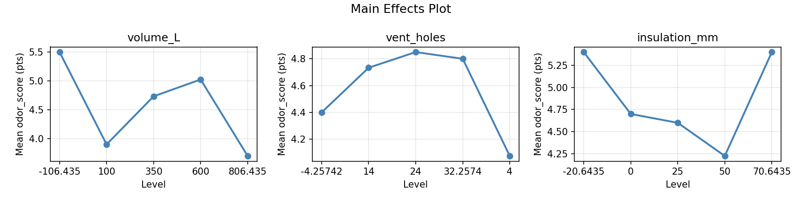
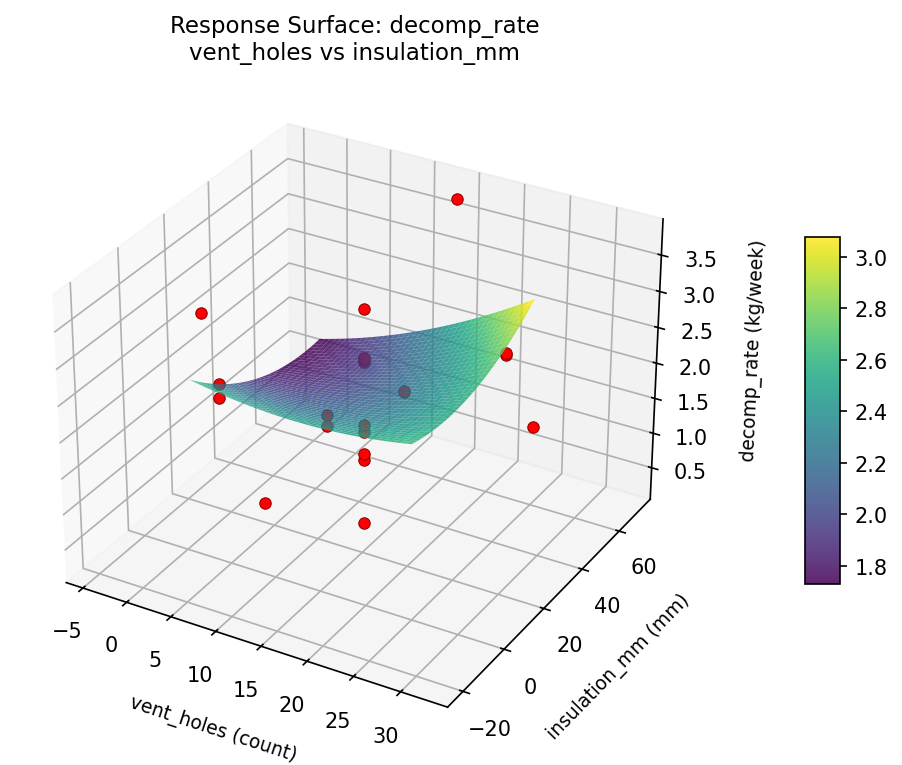
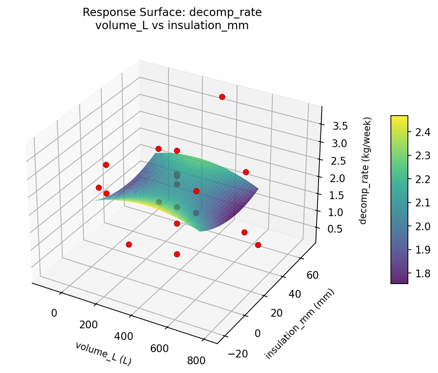
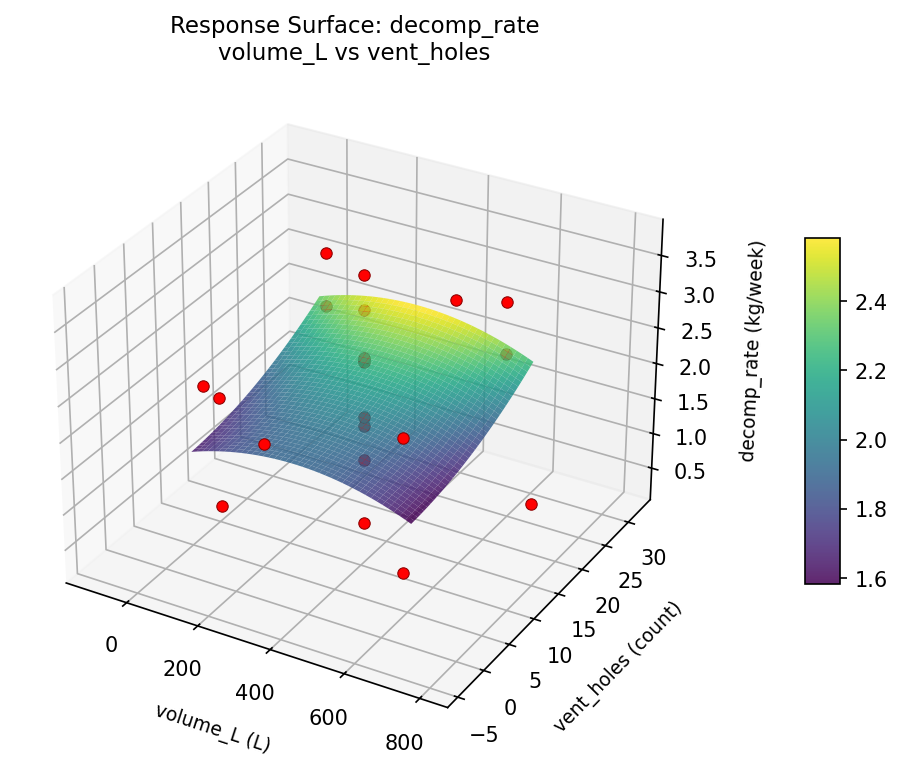
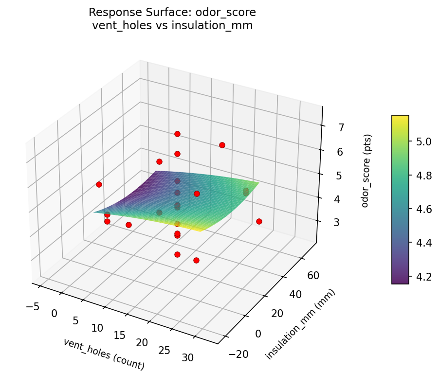
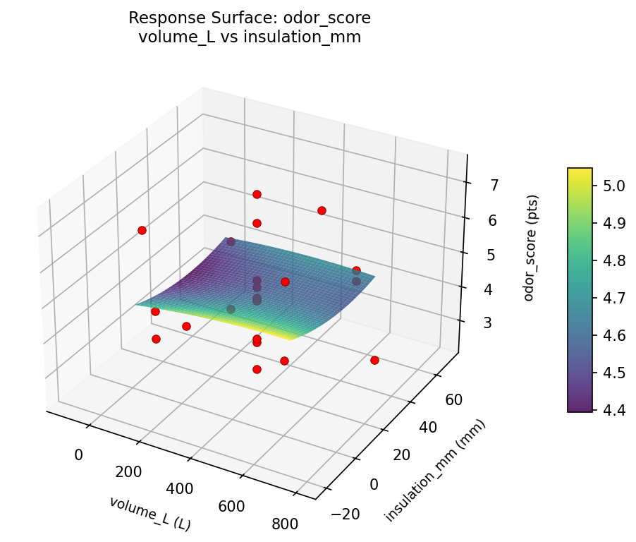
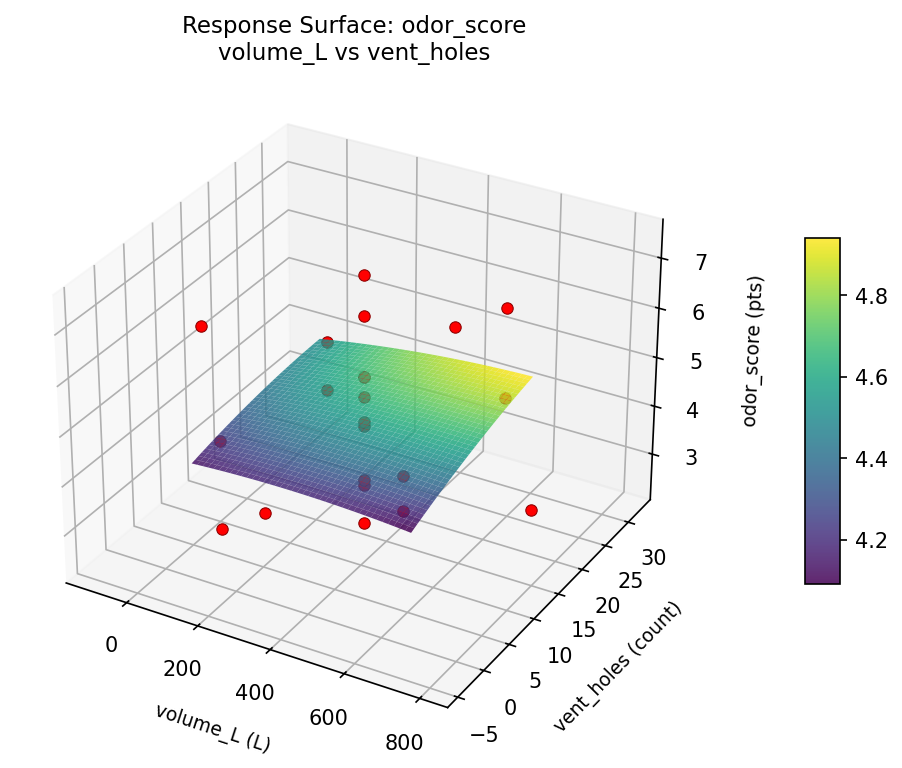

Summary
This experiment investigates backyard composting bin design. Central composite design to maximize decomposition rate and minimize odor by tuning bin volume, ventilation holes, and insulation thickness.
The design varies 3 factors: volume L (L), ranging from 100 to 600, vent holes (count), ranging from 4 to 24, and insulation mm (mm), ranging from 0 to 50. The goal is to optimize 2 responses: decomp rate (kg/week) (maximize) and odor score (pts) (minimize). Fixed conditions held constant across all runs include material = recycled_plastic, location = shaded.
A Central Composite Design (CCD) was selected to fit a full quadratic response surface model, including curvature and interaction effects. With 3 factors this produces 22 runs including center points and axial (star) points that extend beyond the factorial range.
Quadratic response surface models were fitted to capture potential curvature and factor interactions. The RSM contour plots below visualize how pairs of factors jointly affect each response.
Key Findings
For decomp rate, the most influential factors were vent holes (37.3%), volume L (31.5%), insulation mm (31.2%). The best observed value was 3.74 (at volume L = 350, vent holes = 14, insulation mm = 25).
For odor score, the most influential factors were volume L (47.4%), vent holes (26.6%), insulation mm (26.1%). The best observed value was 2.4 (at volume L = 350, vent holes = 14, insulation mm = 25).
Recommended Next Steps
- Run confirmation experiments at the predicted optimal settings to validate the model.
- Consider whether any fixed factors should be varied in a future study.
Experimental Setup
Factors
| Factor | Low | High | Unit |
|---|
volume_L | 100 | 600 | L |
vent_holes | 4 | 24 | count |
insulation_mm | 0 | 50 | mm |
Fixed: material = recycled_plastic, location = shaded
Responses
| Response | Direction | Unit |
|---|
decomp_rate | ↑ maximize | kg/week |
odor_score | ↓ minimize | pts |
Configuration
{
"metadata": {
"name": "Backyard Composting Bin Design",
"description": "Central composite design to maximize decomposition rate and minimize odor by tuning bin volume, ventilation holes, and insulation thickness"
},
"factors": [
{
"name": "volume_L",
"levels": [
"100",
"600"
],
"type": "continuous",
"unit": "L"
},
{
"name": "vent_holes",
"levels": [
"4",
"24"
],
"type": "continuous",
"unit": "count"
},
{
"name": "insulation_mm",
"levels": [
"0",
"50"
],
"type": "continuous",
"unit": "mm"
}
],
"fixed_factors": {
"material": "recycled_plastic",
"location": "shaded"
},
"responses": [
{
"name": "decomp_rate",
"optimize": "maximize",
"unit": "kg/week"
},
{
"name": "odor_score",
"optimize": "minimize",
"unit": "pts"
}
],
"settings": {
"operation": "central_composite",
"test_script": "use_cases/131_composting_bin/sim.sh"
}
}
Experimental Matrix
The Central Composite Design produces 22 runs. Each row is one experiment with specific factor settings.
| Run | volume_L | vent_holes | insulation_mm |
|---|
| 1 | 350 | 14 | 25 |
| 2 | 600 | 4 | 50 |
| 3 | 100 | 24 | 0 |
| 4 | 350 | 32.2574 | 25 |
| 5 | 350 | 14 | 25 |
| 6 | -106.435 | 14 | 25 |
| 7 | 350 | 14 | -20.6435 |
| 8 | 350 | 14 | 25 |
| 9 | 600 | 24 | 0 |
| 10 | 806.435 | 14 | 25 |
| 11 | 350 | 14 | 25 |
| 12 | 350 | -4.25742 | 25 |
| 13 | 350 | 14 | 25 |
| 14 | 100 | 4 | 50 |
| 15 | 350 | 14 | 25 |
| 16 | 600 | 4 | 0 |
| 17 | 350 | 14 | 70.6435 |
| 18 | 600 | 24 | 50 |
| 19 | 350 | 14 | 25 |
| 20 | 100 | 4 | 0 |
| 21 | 100 | 24 | 50 |
| 22 | 350 | 14 | 25 |
Step-by-Step Workflow
1
Preview the design
$ python doe.py info --config use_cases/131_composting_bin/config.json
2
Generate the runner script
$ python doe.py generate --config use_cases/131_composting_bin/config.json \
--output use_cases/131_composting_bin/results/run.sh --seed 42
3
Execute the experiments
$ bash use_cases/131_composting_bin/results/run.sh
4
Analyze results
$ python doe.py analyze --config use_cases/131_composting_bin/config.json
5
Get optimization recommendations
$ python doe.py optimize --config use_cases/131_composting_bin/config.json
6
Multi-objective optimization
With 2 competing responses, use --multi to find the best compromise via Derringer–Suich desirability.
$ python doe.py optimize --config use_cases/131_composting_bin/config.json --multi
7
Generate the HTML report
$ python doe.py report --config use_cases/131_composting_bin/config.json \
--output use_cases/131_composting_bin/results/report.html
Features Exercised
| Feature | Value |
|---|
| Design type | central_composite |
| Factor types | continuous (all 3) |
| Arg style | double-dash |
| Responses | 2 (decomp_rate ↑, odor_score ↓) |
| Total runs | 22 |
Analysis Results
Generated from actual experiment runs using the DOE Helper Tool.
Response: decomp_rate
Top factors: vent_holes (37.3%), volume_L (31.5%), insulation_mm (31.2%).
Pareto Chart

Main Effects Plot

Response: odor_score
Top factors: volume_L (47.4%), vent_holes (26.6%), insulation_mm (26.1%).
Pareto Chart

Main Effects Plot

Response Surface Plots
3D surfaces fitted with quadratic RSM. Red dots are observed data points.
decomp rate vent holes vs insulation mm

decomp rate volume L vs insulation mm

decomp rate volume L vs vent holes

odor score vent holes vs insulation mm

odor score volume L vs insulation mm

odor score volume L vs vent holes

Multi-Objective Optimization
When responses compete, Derringer–Suich desirability finds the best compromise.
Each response is scaled to a 0–1 desirability, then combined via a weighted geometric mean.
Overall Desirability
D = 0.8193
Per-Response Desirability
| Response | Weight | Desirability | Predicted | Dir |
|---|
decomp_rate |
1.0 |
|
2.59 0.6515 2.59 kg/week |
↑ |
odor_score |
1.5 |
|
2.40 0.9545 2.40 pts |
↓ |
Recommended Settings
| Factor | Value |
|---|
volume_L | 350 L |
vent_holes | 14 count |
insulation_mm | 25 mm |
Source: from observed run #2
Trade-off Summary
Sacrifice = how much worse than single-objective best.
| Response | Predicted | Best Observed | Sacrifice |
|---|
odor_score | 2.40 | 2.40 | +0.00 |
Top 3 Runs by Desirability
| Run | D | Factor Settings |
|---|
| #17 | 0.8076 | volume_L=600, vent_holes=24, insulation_mm=0 |
| #10 | 0.7485 | volume_L=350, vent_holes=14, insulation_mm=25 |
Model Quality
| Response | R² | Type |
|---|
odor_score | 0.0262 | linear |
Full Multi-Objective Output
============================================================
MULTI-OBJECTIVE OPTIMIZATION
Method: Derringer-Suich Desirability Function
============================================================
Overall desirability: D = 0.8193
Response Weight Desirability Predicted Direction
---------------------------------------------------------------------
decomp_rate 1.0 0.6515 2.59 kg/week ↑
odor_score 1.5 0.9545 2.40 pts ↓
Recommended settings:
volume_L = 350 L
vent_holes = 14 count
insulation_mm = 25 mm
(from observed run #2)
Trade-off summary:
decomp_rate: 2.59 (best observed: 3.74, sacrifice: +1.15)
odor_score: 2.40 (best observed: 2.40, sacrifice: +0.00)
Model quality:
decomp_rate: R² = 0.4058 (quadratic)
odor_score: R² = 0.0262 (linear)
Top 3 observed runs by overall desirability:
1. Run #2 (D=0.8193): volume_L=350, vent_holes=14, insulation_mm=25
2. Run #17 (D=0.8076): volume_L=600, vent_holes=24, insulation_mm=0
3. Run #10 (D=0.7485): volume_L=350, vent_holes=14, insulation_mm=25
Full Analysis Output
=== Main Effects: decomp_rate ===
Factor Effect Std Error % Contribution
--------------------------------------------------------------
vent_holes 1.7825 0.1910 37.3%
volume_L 1.5050 0.1910 31.5%
insulation_mm 1.4875 0.1910 31.2%
=== ANOVA Table: decomp_rate ===
Source DF SS MS F p-value
-----------------------------------------------------------------------------
volume_L 4 5.2729 1.3182 1.073 0.4242
vent_holes 4 3.8542 0.9635 0.784 0.5631
insulation_mm 4 2.7873 0.6968 0.567 0.6930
Lack of Fit 2 0.0000 0.0000 0.000 1.0000
Pure Error 7 8.5981 1.2283
Error 9 4.9482 1.2283
Total 21 16.8625 0.8030
=== Summary Statistics: decomp_rate ===
volume_L:
Level N Mean Std Min Max
------------------------------------------------------------
-106.435 1 2.6000 0.0000 2.6000 2.6000
100 4 2.8725 0.3032 2.6000 3.1400
350 12 1.7750 0.9880 0.2900 3.7400
600 4 2.2225 0.4387 1.5800 2.5600
806.435 1 3.2800 0.0000 3.2800 3.2800
vent_holes:
Level N Mean Std Min Max
------------------------------------------------------------
-4.25742 1 0.8200 0.0000 0.8200 0.8200
14 12 2.0900 1.0151 0.2900 3.7400
24 4 2.6025 0.7336 1.5800 3.1400
32.2574 1 1.2800 0.0000 1.2800 1.2800
4 4 2.4925 0.1408 2.3300 2.6200
insulation_mm:
Level N Mean Std Min Max
------------------------------------------------------------
-20.6435 1 1.1900 0.0000 1.1900 1.1900
0 4 2.6775 0.3114 2.4200 3.1300
25 12 1.9658 1.0665 0.2900 3.7400
50 4 2.4175 0.6512 1.5800 3.1400
70.6435 1 2.4000 0.0000 2.4000 2.4000
=== Main Effects: odor_score ===
Factor Effect Std Error % Contribution
--------------------------------------------------------------
volume_L 4.1000 0.2609 47.4%
vent_holes 2.3000 0.2609 26.6%
insulation_mm 2.2583 0.2609 26.1%
=== ANOVA Table: odor_score ===
Source DF SS MS F p-value
-----------------------------------------------------------------------------
volume_L 4 10.3320 2.5830 2.234 0.1456
vent_holes 4 5.3211 1.3303 1.150 0.3933
insulation_mm 4 5.2920 1.3230 1.144 0.3958
Lack of Fit 2 2.3986 1.1993 1.037 0.4032
Pure Error 7 8.0950 1.1564
Error 9 10.4936 1.1564
Total 21 31.4386 1.4971
=== Summary Statistics: odor_score ===
volume_L:
Level N Mean Std Min Max
------------------------------------------------------------
-106.435 1 7.4000 0.0000 7.4000 7.4000
100 4 4.7500 1.1561 3.7000 6.4000
350 12 4.3917 1.2214 2.4000 6.6000
600 4 4.8250 0.4787 4.4000 5.5000
806.435 1 3.3000 0.0000 3.3000 3.3000
vent_holes:
Level N Mean Std Min Max
------------------------------------------------------------
-4.25742 1 2.7000 0.0000 2.7000 2.7000
14 12 4.7500 1.4068 2.4000 7.4000
24 4 5.0000 1.1916 3.7000 6.4000
32.2574 1 3.7000 0.0000 3.7000 3.7000
4 4 4.5750 0.1708 4.4000 4.8000
insulation_mm:
Level N Mean Std Min Max
------------------------------------------------------------
-20.6435 1 6.6000 0.0000 6.6000 6.6000
0 4 4.9500 0.9713 4.4000 6.4000
25 12 4.3417 1.4029 2.4000 7.4000
50 4 4.6250 0.7455 3.7000 5.5000
70.6435 1 4.7000 0.0000 4.7000 4.7000
Optimization Recommendations
=== Optimization: decomp_rate ===
Direction: maximize
Best observed run: #18
volume_L = 350
vent_holes = 14
insulation_mm = 25
Value: 3.74
RSM Model (linear, R² = 0.1138, Adj R² = -0.0339):
Coefficients:
intercept +2.1618
volume_L +0.0261
vent_holes -0.2828
insulation_mm +0.2240
RSM Model (quadratic, R² = 0.2624, Adj R² = -0.2909):
Coefficients:
intercept +2.5155
volume_L +0.0261
vent_holes -0.2828
insulation_mm +0.2240
volume_L*vent_holes +0.1150
volume_L*insulation_mm -0.1050
vent_holes*insulation_mm -0.0700
volume_L^2 -0.0898
vent_holes^2 -0.1213
insulation_mm^2 -0.3193
Curvature analysis:
insulation_mm coef=-0.3193 concave (has a maximum)
vent_holes coef=-0.1213 concave (has a maximum)
volume_L coef=-0.0898 negligible curvature
Predicted optimum (from linear model, at observed points):
volume_L = 600
vent_holes = 4
insulation_mm = 50
Predicted value: 2.6947
Surface optimum (via L-BFGS-B, linear model):
volume_L = 600
vent_holes = 4
insulation_mm = 50
Predicted value: 2.6947
Model quality: Weak fit — consider adding center points or using a different design.
Factor importance:
1. vent_holes (effect: 1.5, contribution: 39.3%)
2. insulation_mm (effect: 1.3, contribution: 35.5%)
3. volume_L (effect: 1.0, contribution: 25.2%)
=== Optimization: odor_score ===
Direction: minimize
Best observed run: #2
volume_L = 350
vent_holes = 14
insulation_mm = 25
Value: 2.4
RSM Model (linear, R² = 0.0692, Adj R² = -0.0859):
Coefficients:
intercept +4.6227
volume_L -0.1058
vent_holes -0.3193
insulation_mm -0.1876
RSM Model (quadratic, R² = 0.2462, Adj R² = -0.3192):
Coefficients:
intercept +4.8951
volume_L -0.1058
vent_holes -0.3193
insulation_mm -0.1876
volume_L*vent_holes -0.4125
volume_L*insulation_mm +0.2625
vent_holes*insulation_mm +0.3125
volume_L^2 -0.2712
vent_holes^2 -0.2412
insulation_mm^2 +0.1038
Curvature analysis:
volume_L coef=-0.2712 concave (has a maximum)
vent_holes coef=-0.2412 concave (has a maximum)
insulation_mm coef=+0.1038 convex (has a minimum)
Notable interactions:
volume_L*vent_holes coef=-0.4125 (antagonistic)
vent_holes*insulation_mm coef=+0.3125 (synergistic)
Predicted optimum (from linear model, at observed points):
volume_L = 100
vent_holes = 4
insulation_mm = 0
Predicted value: 5.2354
Surface optimum (via L-BFGS-B, linear model):
volume_L = 600
vent_holes = 24
insulation_mm = 50
Predicted value: 4.0100
Model quality: Weak fit — consider adding center points or using a different design.
Factor importance:
1. insulation_mm (effect: 2.5, contribution: 51.8%)
2. vent_holes (effect: 1.3, contribution: 27.0%)
3. volume_L (effect: 1.0, contribution: 21.2%)